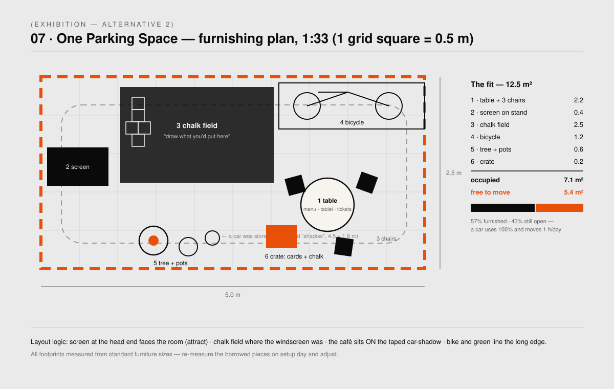

Both alternatives are built from the same parts — only the room changes.
A real 5.0 × 2.5 m parking space taped on the floor;
the dot-matrix as graphic grammar
(○○○○○ private/today · ●●● shared/hub city, accent
#E8500A) — the device the critic singled out at finals; the silent
60-Second City loop as the voice of the exhibit; the A6 fact cards and persona tickets
as the take-home; and the locked figures: 763 vehicles · 68 hubs.
The legibility ladder both alternatives must pass: 10 s → 60 s → 5 min → take-home, no narration.The loop (~75 s, silent): full storyboard with asset filenames in alt-1-stations/draft-content.md §2.“Take a dot home” — the A6 series. In Alt 2 the same cards become the café menu.
Alt 1 — Station constellation
02
Stations orbit the taped space: a loop screen, the 3D hub kit, a persona tablet, a projection cycle, a sticker map.
Tier A
A1The 60-Second City
Attract loop on the entrance-facing screen; touch → full deck; 90 s idle → loop.
Tier A
A2Hub Anatomy
The existing hub-viewer/ 3D kit — hover any element. Offline, zero build.
Tier B
BChoose a Life
Four personas on a tablet; Thomas (VW case study) first in reading order.
Tier C
COne Parking Space
The taped rectangle + projector cycling what the footprint becomes. Fallback: A3 prints inside the tape.
Print
P1Take a dot home
Fact cards + persona tickets, QR-linked to deck and map.
Print
P2Where would you put a hub?
A3-tiled masterplan + dot stickers — a crowd-made dot-matrix by Sunday.
Delete the stations. The furnished parking space is the exhibition — and everything fits inside it.
A café table with three chairs standing on the taped shadow of a car. A small tree and
pots along the edge. A bicycle on its stand. A chalk field underfoot, seeded with a hopscotch, filling with visitors'
drawings over four days. One screen at the head end plays the loop; the personas run on a tablet on the table; the fact
cards become the café menu; the manifest board is the only wall text. The exhibit applies the project's
own method to itself: count what fits in 12.5 m² — then sit in it.

The furnishing plan: 7.1 m² furnished, 5.4 m² still free — a parked car uses all 12.5 and moves one hour a day.
“Draw what you'd put here.” Dark board + chalk (charcoal only on paper — the pool floor survives).
Photographed nightly: a 4-day time-lapse of a parking space becoming a place.
Equipment
Less tech than Alt 1
1 screen + 1 PC + 1 tablet. No projector — both XGIMIs go back to the class pool,
which is worth saying in the negotiation.
Choosing
04
Alt 1 · Stations
Alt 2 · One Parking Space
Core image
Room orbits an empty taped space
The space itself, furnished and alive
Screens
2 PCs + TV + tablet + projector
1 screen + 1 tablet
Main risk
Projector grant, tech babysitting
Furniture sourcing, chalk management
Visitor role
Watches, explores, then acts
Sits inside the argument immediately
The photo that travels
Projected rectangle
People at a café table in a parking space
Thesis
Explains reclaiming
Performs reclaiming
Combo: Alt 2's furnished space + Alt 1's projector cycle onto the chalk
field for the Summaery evenings — the maximal version if the pool grants everything.
Numbers & next steps
05
Before printing anything: all materials use the locked figures — 763 vehicles · 68 hubs
(6 L / 19 M / 43 S). The live deck still shows the web-tool run (1,273 / 140). To verify:
[CARS-REPLACED] (recompute for 763) and Alt 2's “~12,500 spaces” manifest claim.
By
Do
Fri Jul 3
Pick Alt 1 / Alt 2 / combo · submit equipment request · verify the two numbers · measure the room · (Alt 2) confirm furniture sources
Wed Jul 8
Loop built · prints done · tape + furnish · unattended dry run + cold-visitor test